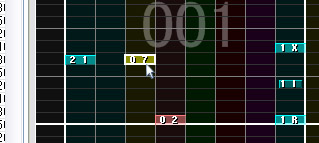

| 基本的な使い方 |
|---|
| チップを置く、削除する |
① 編集モード（ ）にします。
）にします。
② 譜面に配置したいチップを、リストから選択します。
③ 譜面上で左クリックすると、チップを譜面に置けます。

編集モード（ ）では、チップにマウスを合わせて右クリックするとそのチップを削除できます。
）では、チップにマウスを合わせて右クリックするとそのチップを削除できます。
選択モード（ ）では、ドラッグでチップを選択して
Delキーを押下するとチップを削除できます。
）では、ドラッグでチップを選択して
Delキーを押下するとチップを削除できます。
ガイド幅を変更すると、チップの配置幅を変えることができます。
ガイド幅 1/4
ガイド幅 1/32
Ctrlキーを押したまま左クリックすると、チップを裏チャンネルに置くことができます。このとき、チップは左右が少し短く表示されます。